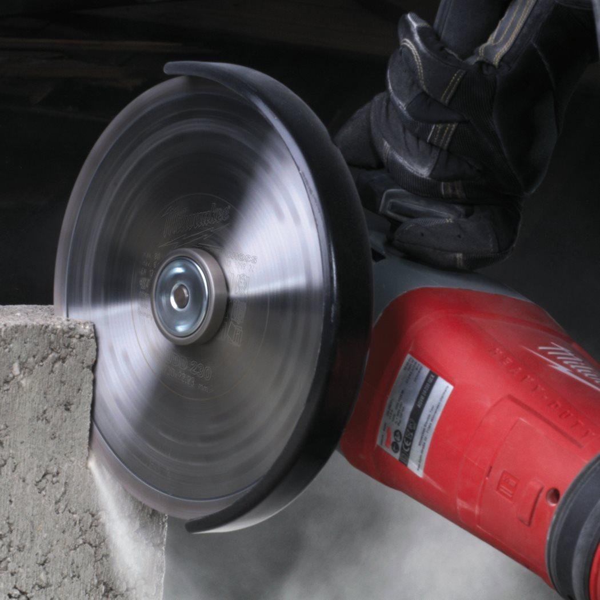
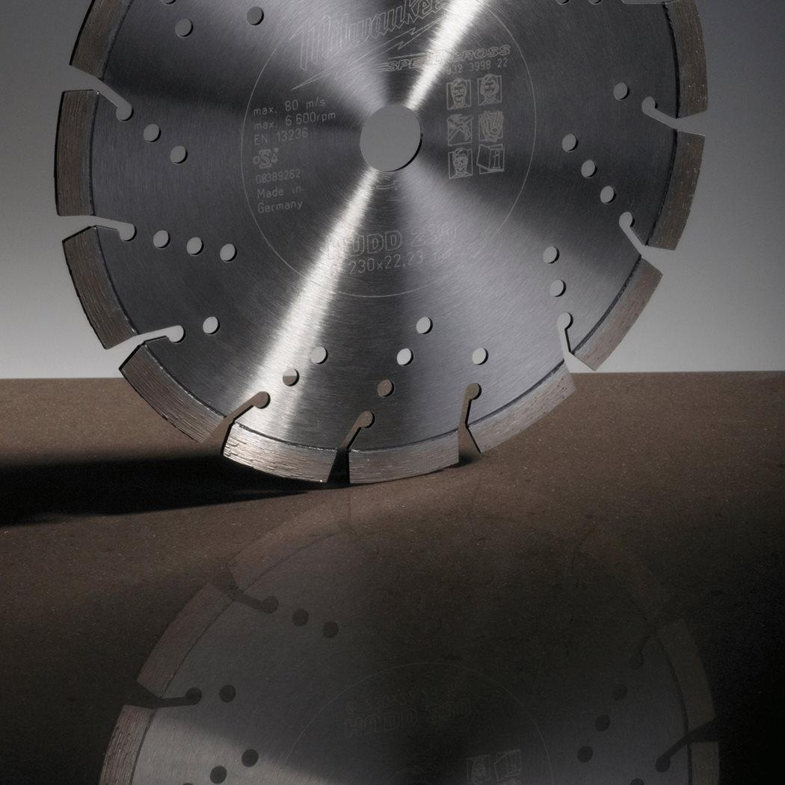
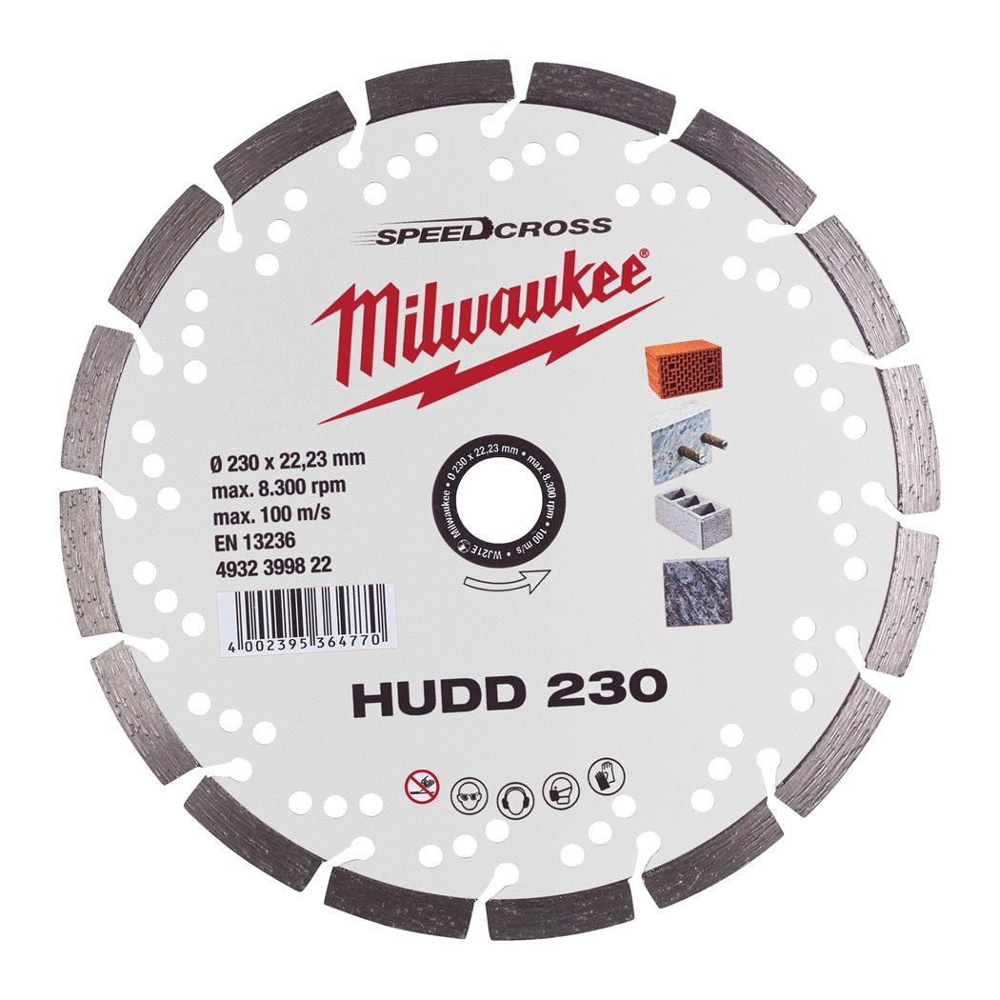

| Fits MILWAUKEE® | HUDD 230 |
| Abrasive refractory materials | Suitable |
| Aerated and breeze concrete blocks | Suitable |
| Artificial stone | Most suitable |
| Artificial stone - hard | Most suitable |
| Bore size (mm) | 22.23 |
| Concrete tiles | Most suitable |
| Contents | 230 x 22.23 mm Speed cross blade with 2.6 mm cutting width, 10 mm segment height. |
| Cutting width (mm) | 2.6 |
| Disc diameter (mm) | 230 |
| General building materials | Most suitable |
| Gneiss | Most suitable |
| Granite | Most suitable |
| Granite tiles and slabs | Suitable |
| Lime and sandstone blocks hard | Most suitable |
| Lime and sandstone blocks medium | Most suitable |
| Lime and sandstone blocks soft and abrasive | Suitable |
| Marble tiles and slabs | Suitable |
| Materials suited for | Tile|Brick|Limestone|Reinforced concrete|Concrete|Natural Stone|Granite |
| Pack quantity | 1 |
| Poroton | Most suitable |
| Porphyry | Most suitable |
| Roof tiles clay | Most suitable |
| Roof tiles concrete | Most suitable |
| Screed | Suitable |
| Segment height (mm) | 10 |
| Slate | Most suitable |
| Stoneware and clay tiles | Most suitable |
| Wheel size (mm) | 230 |
| Article Number | 4932399822 |
| EAN | 4002395364770 |